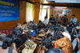
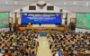

Berita
Sangsi Keterlambatan Penyaluran BOS pada 2012
Depok, Rabu (16 Maret 2011)--Pemerintah memberikan sangsi bagi pemerintah kabupaten/kota yang belum menyalurkan dana Bantuan Operasional Sekolah (BOS) triwulan pertama 2011. Sangsi yang diberikan berupa pengurangan alokasi anggaran dari pemerintah pusat ke pemerintah daerah pada 2012.
Detail beritaPendidikan sebagai Mesin Mobilitas Vertikal
Depok, Rabu (16 Maret 2011)--Tata kelola pendidikan harus terus menerus dilakukan secara efektif dan efisien baik dari sisi penggunaan anggaran maupun proses pendidikan itu sendiri. Efisiensi dilakukan karena dari sisi anggaran pendidikan terus membaik, sedangkan efektivitas dilakukan karena proses di dunia pendidikan tidak bisa dibalik (irreversable).
Detail beritaAda Kiai Kanjeng di Rembuk Nasional Pendidikan
 Terdapat “aroma” yang berbeda di Rembuk Nasional Pendidikan 2011. Tahun ini, gamelan Kiai Kanjeng turut meramaikan event besar Kemdiknas. Sebenarnya, gamelan Kiai Kanjeng bukan nama grup musik, melainkan nama sebuah konsep nada pada alat musik “tradisional” gamelan yang diciptakan oleh Novi Budianto. Kalau dalam khasanah musik Jawa terutama pada gamelan lazimnya sistem tangga nada yang dipakai adalah laras pentatonis yang terbagi ke dalam dua jenis nada yakni pelog dan slendro. Maka, gamelan yang digubah oleh Novi ini tidak berada pada jalur salah satunya, alias bukan pelog bukan slendro.
Terdapat “aroma” yang berbeda di Rembuk Nasional Pendidikan 2011. Tahun ini, gamelan Kiai Kanjeng turut meramaikan event besar Kemdiknas. Sebenarnya, gamelan Kiai Kanjeng bukan nama grup musik, melainkan nama sebuah konsep nada pada alat musik “tradisional” gamelan yang diciptakan oleh Novi Budianto. Kalau dalam khasanah musik Jawa terutama pada gamelan lazimnya sistem tangga nada yang dipakai adalah laras pentatonis yang terbagi ke dalam dua jenis nada yakni pelog dan slendro. Maka, gamelan yang digubah oleh Novi ini tidak berada pada jalur salah satunya, alias bukan pelog bukan slendro.
Rembuk Nasional Pendidikan Dorong Percepatan Layanan Pendidikan
 Guna mendorong percepatan layanan pendidikan, Kementerian Pendidikan Nasional (Kemdiknas) kembali menyelenggarakan Rembuk Nasional Pendidikan (RNP), berlangsung pada 15 s.d. 18 Maret 2011, di Pusat Pengembangan Tenaga Kependidikan (d/h. Pusat Pendidikan dan Pelatihan Pegawai) Kemdiknas, Bojongsari, Depok. Kegiatan ini direncanakan dibuka oleh Menteri Pendidikan Nasional, Mohammad Nuh, pada Rabu, 16 Maret 2011.
Guna mendorong percepatan layanan pendidikan, Kementerian Pendidikan Nasional (Kemdiknas) kembali menyelenggarakan Rembuk Nasional Pendidikan (RNP), berlangsung pada 15 s.d. 18 Maret 2011, di Pusat Pengembangan Tenaga Kependidikan (d/h. Pusat Pendidikan dan Pelatihan Pegawai) Kemdiknas, Bojongsari, Depok. Kegiatan ini direncanakan dibuka oleh Menteri Pendidikan Nasional, Mohammad Nuh, pada Rabu, 16 Maret 2011.
Kemendiknas Perbaiki Tata Kelola Organisasi
JAKARTA - Sebagai bagian dari reformasi birokrasi, Kementerian Pendidikan Nasional (Kemendiknas) juga memperbaiki tata kelola organisasi. Sekretaris Jenderal Kemendiknas Dodi Nandika menyampaikan, tata kelola organisasi diharapkan lebih transparan, lebih anti korupsi, lebih bersih, dan lebih akuntable. "Ada basis yang kuat tentang bagaimana tata kelola pendidikan itu dibenahi," ujarnya seperti dikutip dari keterangan tertulis Kemendiknas, Minggu (13/3/2011).
Detail berita